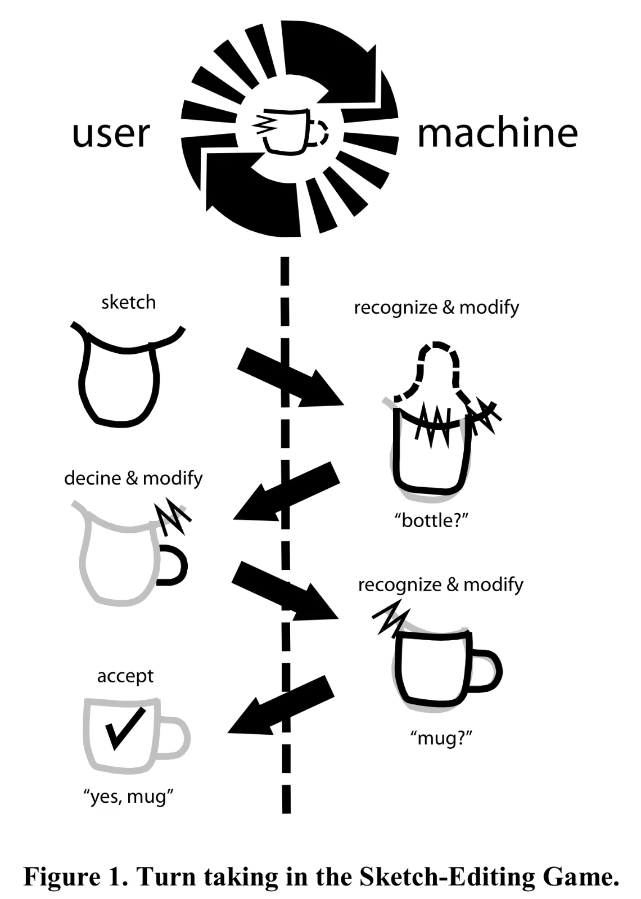
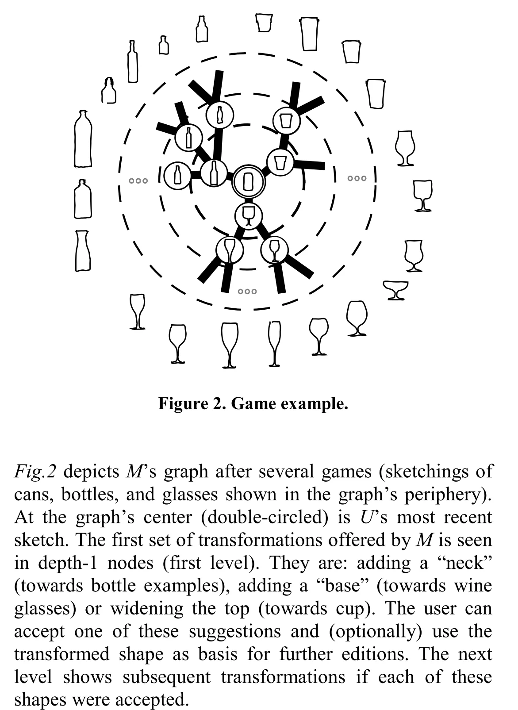

dyna.ink (formerly MetaMedium) is a way of working with AI by drawing. You sketch on a canvas and the canvas reads what you drew — a circle is a circle, two boxes side by side are a row, a word beside a shape is its name — and offers its reading back where you can see it and argue with it. Name a pattern and the canvas learns your vocabulary. A model can join, reading with you and drawing back. The drawing stays yours.
The idea underneath: AI as a meta-word, a new part of language that turns rough marks into meaning from their context. Drawing becomes something a person and a machine can do together, with a seven-year-old's sketch and an engineer's diagram on the same canvas, each read at its own level.
Running the Loop
This is the canonical loop, run once through the engine and recorded as the events it produced. What you step through below is not a video: it is the engine replaying its own log in your browser, and the inspector on the right holds every reading at every step. Draw on it at any point and the session continues with your marks.
Draw a circle, name it, compose it, and the canvas reads with your wordOpen it →
View-only on touch — tap Open it → to draw in it
The Problem
Dead Drawing on a Living Medium
Today's drawing tools, from Illustrator to OneNote, treat drawings as pixels or vectors, not as meaning. Illustrator knows a circle's geometry but not what it stands for. OneNote captures your marks and never interprets them. Procreate's strokes stay forever inert.
Even Figma and Miro treat diagrams as layout, not computation. You can draw a flowchart, but the arrows do not flow. You can sketch a state machine, but it does not run. The computer records what you drew without understanding what you meant.
01 / Representation
From marks to meaning
A drawing can preserve appearance, expose structure, or become something both parties can question.
All readings are visible. Select one to trace its role in the map.
Pixels and captured ink remember what was drawn. They do not, by themselves, say what it means.
Representation
Samples, strokes, appearance
In the paper
Photoshop; OneNote ink capture
Trade-off
Fidelity without an explicit semantic model
02Structure
Expose the structure
Vectors, components and executable sketches give the drawing addressable parts and relationships.
Representation
Geometry, instances, links, behavior
In the paper
Illustrator; Figma; Miro; Chalktalk
Trade-off
Structure still needs an interpretation
03Interpret
Make interpretation revisable
Model-assisted tools can propose what marks stand for. dyna.ink’s aim is to keep that proposal visible, negotiable and reusable.
Representation
Marks + relations + readings
In the paper
tldraw computer; dyna.ink’s proposal
Trade-off
Interpretations can be wrong; preserve the source
Illustration shown: Interpret. All reading notes follow.
Conceptual illustration · explore without sending data
The digital representation spectrumA conceptual map of representations, not a current feature audit or a ranking of products. A tool may work across several layers.
Drawing, our most natural way of working an idea out, stays inert on the screen. We have given computers eyes, ears and a voice, but not a way to think alongside us on paper.
The Communication Bottleneck
Language models can now reason, write and hold a conversation. We reach them through a text box — like sharing a piece of music by describing it.
02 / Communication
A wider channel for thought
Sequence, prosody and spatial relations carry different kinds of context. Explore what each medium makes directly available.
Pick a view, or show all states to compare them.
Text
Context carried by the mediumSame intent · different expression
A sequence to interpret
Words make precise, portable statements. Relationships must usually be named and ordered in the sequence.
Directly available
Symbols; order; explicit descriptions
Example
“Connect the circle to the square.”
Strength
Precise language and searchable records
Voice
Context carried by the mediumSame intent · different expression
A sequence with a performance
Speech carries timing, emphasis and tone alongside the words. A hesitation or stress can change the reading.
Directly available
Words; rhythm; prosody
Example
“Connect THAT circle to the square.”
Strength
Temporal nuance and expressive delivery
Drawing
Context carried by the mediumSame intent · different expression
Relations already on the surface
Position, enclosure and connection can be shown together. Words and gestures can remain attached to the things they qualify.
Directly available
Space; topology; gesture; annotation
Example
An edge connects two visible objects.
Strength
Several relationships can be inspected at once
sequenceshared relation
Illustration shown: Drawing. All reading notes follow.
Conceptual illustration · explore without sending data
The communication bottleneckThese channels complement one another. The drawing is not a measured “higher-bandwidth” channel; its advantage here is that relationships can be made visible.
The limit is the channel, not the model. We think in pictures, space and gesture, and we have a text box to say it through. A designer describing a sketch in words, a child turning play into a query — something is lost every time.
This is about more than convenience. A text box favours people who already think in text. A child who thinks in pictures, a craftsperson who thinks with their hands, an elder who thinks in stories — each is left at the edge of what these machines could do with them.
"In a few years, men will be able to communicate more effectively through a machine than face to face."
— J.C.R. Licklider & Robert Taylor, "The Computer as a Communication Device," 1968
It has come true for text. We have richer languages already — drawing, gesture, arrangement, annotation, showing — and no interface that speaks them.
The Vision: As We May Sketch
In 1945, Vannevar Bush imagined the Memex—a device for extending human memory and enabling associative thinking. He asked: As we may think, how might machines augment the trails of connection that constitute human understanding?
We ask the parallel question. As we may sketch: how might machines carry the visual, spatial, gestural thinking that so much of human thought is made of — especially in children, who draw before they write and think in pictures before they think in propositions?
Anything digitized has become an abstraction, so let's embrace it. When I draw into a computer with the flourish of my hand, we can take it beyond pixels, beyond even vectors, toward universal mapping attempts, toward a truly metamedium.
— John Hanacek, "As We May Sketch," Georgetown CCT Masters Thesis 2016
A curve drawn by hand is a chance to try fitting a function to the line. A function is just waiting to become metaphorical graphics. Digital ink will move beyond "networked paper" to become a magical plane where computer vision partners with the human hand functioning as an interactive external imagination. From sketch to code, from code to sketch—no longer a pipeline but rather a constellation of possibilities, an ever-expanding network of opportunities to map expressiveness and flow to logic and math directly.
Dancing Without Music
"Imagine that children were forced to spend an hour a day drawing dance steps on squared paper and had to pass tests in these 'dance facts' before they were allowed to dance physically. Would we not expect the world to be full of 'dancophobes'?"
— Seymour Papert, Mindstorms, 1980
Papert's question cuts to the heart of how we teach abstraction. We have raised generations of "mathphobes": people who believe they are bad at math while routinely using logical reasoning to fix computers, build furniture and run businesses.
The problem is not aptitude. We ask people to dance without music: to manipulate symbols divorced from meaning, to learn the steps before they feel the rhythm. A child with an intuitive sense for assembling things in space may never connect school geometry with building.
Give that same person constant feedback, immediate results, symbol connected to meaning through direct manipulation, and they discover they were never unable to do math. They were never shown the connection.
A Medium for Children
"The child is a 'verb' rather than a 'noun', an actor rather than an object... We would like to hook into his current modes of thought in order to influence him rather than just trying to replace his model with one of our own."
— Alan Kay, "A Personal Computer for Children of All Ages," 1972
Children already think computationally: in systems, in cause and effect, in what happens if. They do not need to learn to code first. They need an interface that meets them where they are — drawing, playing, exploring. dyna.ink is built for that: a canvas where a child's "bouncy house" already has the beginnings of structural engineering in it, and a doodled spiral is a way into mathematics.
The Lineage
dyna.ink stands on decades of work in sketch interfaces and computational media. The lineage shows what is new here and what is borrowed.
1960
┃
MAN-COMPUTER SYMBIOSIS VISIONS
J.C.R. Licklider — The foundational vision
"Human brains and computing machines coupled together very tightly... the resulting partnership will think as no human brain has ever thought."
┗━━ Cooperative interaction, not automation
1962
┃
AUGMENTING HUMAN INTELLECT VISIONS
Douglas Engelbart — Framework for human augmentation
"Raise the level of the capability hierarchy at which human brains operate." Research agenda that led to the 1968 demo.
┗━━ Augmentation, not replacement
1963
┃
SKETCHPAD VISIONS
Ivan Sutherland — A man-machine graphical communication system
First direct manipulation of graphical objects. Constraints, copying, instances.
┗━━ Drawing as computational dialogue
1968
┃
ENGELBART VISIONS
Douglas Engelbart — The augmentation of human intellect
Mouse, hypertext, real-time collaboration, video conferencing.
Hand-drawn UI mockups recognized and made interactive.
┗━━ Sketch-to-prototype pipeline
2004
┃
SKETCHREAD RECOGNITION
Christine Alvarado & Randall Davis — A multi-domain sketch recognition engine
Hierarchical shape recognition from strokes to complex diagrams.
┗━━ Domain-independent sketch parsing
2007
┃
PHYSICSBOOK RECOGNITION
Saad Cheema & Joseph LaViola — A sketch-based physics tutoring system
Draw physics diagrams that simulate automatically.
┗━━ Educational sketch recognition
2011
┃
PAPER VISIONS
FiftyThree — Expressive tools for visual thinking
Consumer app bringing gestural, expressive digital drawing to iPad.
┗━━ Mass-market appetite for sketch interfaces
2011
┃
SHADOWDRAW RECOGNITION
Yong Jae Lee et al. — Real-time user guidance for freehand drawing
System suggests strokes based on partial input; helps users draw better.
┗━━ AI as drawing collaborator
2012
┃
INVENTING ON PRINCIPLE VISIONS
Bret Victor — Creators need immediate connection to what they create
Live feedback, direct manipulation, visible state.
┗━━ The principle that drives dyna.ink
2014
┃
JUXTAPOZE RECOGNITION
Andrew Head et al. — Supporting serendipity and creative expression
Suggest related visual elements during composition; semantic associations.
┗━━ Canvas that offers possibilities
2014
┃
KITTY / DRACO RECOGNITION
Rubaiat Kazi et al. — Sketch-based animation tools
Draw characters and motions; system brings them to life.
┗━━ Sketch as animation input
2015
┃
CHALKTALK VISIONS × RECOGNITION
Ken Perlin — Thinking by drawing, drawing by thinking
Recognized sketches become live simulations; linked behaviors.
┗━━ Semantic sketching — the direct ancestor
2018
┃
DYNAMICLAND VISIONS
Bret Victor et al. — A communal computer
Physical paper with computational behavior; no screens.
┗━━ Computing escapes the rectangle
2018
┃
DATAINK RECOGNITION
Haijun Xia et al. — Direct pen and touch data visualization
Draw charts that bind to data; gestural visualization authoring.
┗━━ Sketch-based data viz
2023
┃
GRAPHOLOGUE INTELLIGENCE
Peiling Jiang et al. — Exploring LLM responses with interactive diagrams
Text responses converted to node-link diagrams in real-time.
┗━━ Diagrammatic dialogue with AI
2023
┃
SENSECAPE INTELLIGENCE
Sangho Suh et al. — Enabling multilevel exploration of web with LLMs
Hierarchical concept maps for navigating AI-generated content.
┗━━ Spatial LLM exploration
2023
┃
MAKE-REAL INTELLIGENCE
tldraw — Sketch to working UI
Draw a wireframe, LLM generates functional code.
┗━━ Sketch-to-application via AI
2024
┃
DRAWTALKING INTELLIGENCE
Eyal Rosenberg et al. — Building interactive worlds by sketching and speaking
Multimodal creation of interactive scenes. Ken Perlin co-author.
┗━━ Chalktalk lineage continues
2024
┃
TLDRAW COMPUTER INTELLIGENCE
tldraw — AI as canvas participant
Autonomous agent that can see, draw, and use the canvas.
┗━━ Bidirectional human-AI canvas
2025
┃
dyna.ink CONVERGENCE
All threads merge
Synthesizes:
From Visions: Dynabook's metamedium concept + Victor's directness principle
From Recognition: Sketch-editing games' negotiation paradigm
From Intelligence: LLM interpretation + probabilistic reasoning
┗━━ Drawing becomes a shared language between human and AI, enabling genuine collaboration through rich symbolic exchange
The Thesis: AI as Meta-Word
Closing the Triadic Loop
Today's interfaces connect language to computation and leave meaning outside. We write; the machine executes; something comes back. What it meant lives only in our heads, before and after.
03 / Triadic closure
Meaning inside the loop
Language expresses. Computation transforms. Meaning connects the result back to an intention.
All readings are visible. Select one to trace its role in the map.
LanguageComputationMeaningInterpret ↔ revise
express / transforminterpret / revise
Language
A proposal, not just a command
A word, line or gesture can propose a reading. Its meaning depends on what surrounds it and on the shared vocabulary.
Contribution
Express an intention
Return path
A visible reading can change the next mark
On the surface
An annotation stays attached to its subject
Computation
A transformation you can inspect
The system maps marks and relationships to operations. Its response belongs beside the source, not behind an opaque command boundary.
Contribution
Calculate, connect, simulate
Return path
The outcome helps test the interpretation
On the surface
The operation and its effects remain inspectable
Meaning
The reason the transformation matters
Meaning is the relation between marks, context and purpose. The model participates in interpreting it; the person can still reject its reading.
Contribution
Relate an outcome to an intention
Return path
Correction changes the next interpretation
On the surface
A shared, revisable account of what was meant
Illustration shown: Meaning. All reading notes follow.
Conceptual illustration · explore without sending data
Closing the Language–Computation–Meaning loopSwitch off shared meaning to isolate a command/output path. Switch it back on to expose interpretation and revision. This is a design model, not a claim that all other interfaces lack feedback.
When a mark can mean several things, and the system holds those readings and refines them with you, meaning becomes part of the loop instead of something that happens off-screen.
AI as Meta-Word
Writing externalised memory: a thought could be kept and picked up again later. AI can externalise interpretation — the work of making meaning from marks in context. That is what a meta-word is for.
What Is a Meta-Word?
A meta-word is not a word about words, like "noun" or "verb". It is a word that changes other words. Read "bounce" beside a spring and it knows what a spring does when it bounces, and can make it happen.
In ordinary communication people trade signs — words, gestures, marks — and each rebuilds the meaning for themselves. dyna.ink lets the AI take part in that rebuilding. It:
holds several readings of a mark at once
keeps them open until context settles it
learns your vocabulary
moves between sketch, equation, code and text
Less a tool than a part of speech.
"Thanks to a mapping, full-fledged meaning can suddenly appear in a spot where it was entirely unsuspected."
— Douglas Hofstadter, I Am a Strange Loop, 2007
Thinking as Conceptual Blending
What is human thought anyway? Gilles Fauconnier and Mark Turner attempted to answer this with their theory of conceptual blending, building on Lakoff and Johnson's work on how metaphor structures understanding. Consider a riddle:
A Buddhist monk begins at dawn walking up a mountain, reaches the top at sunset. After several days, he walks back down, starting at dawn and arriving at sunset. Is there a place on the path he occupies at the same hour on both journeys?
The answer becomes obvious the moment you visualize two monks walking the path simultaneously—one going up, one going down. They must meet somewhere. But this visualization requires what Fauconnier and Turner call an "integration network"—a blended mental space where separate inputs combine to reveal emergent structure. I have animated their central figure illustrating the blending space as a diagram.
Figure · Conceptual BlendingFauconnier & Turner's model: two input spaces merge into a blended space revealing emergent structure.
dyna.ink is a system for building integration networks on a canvas. When you draw a diagram, you are setting up mental spaces. When you connect elements with arrows or proximity, you are creating cross-space mappings. When the AI interprets your marks and offers possibilities, it is helping locate shared structures. Diagrammatic thinking externalizes the blending process—making it visible, manipulable, shareable. Two people looking at the same diagram can point to the same conceptual space.
Tools vs. Medium
Alan Kay's Dynabook vision asked: "What is the carrying capacity for ideas of the computer?" His answer: the computer is a metamedium—it can simulate any existing media and also be the basis of media that can't exist without the computer. But Kay made a crucial distinction:
"What then is a personal computer? One would hope that it would be both a medium for containing and expressing arbitrary symbolic notions, and also a collection of useful tools for manipulating these structures."
— Alan Kay, "A Personal Computer for Children of All Ages," 1972
Most AI interfaces treat the model as a tool: something you call, ask, command. dyna.ink puts it in the medium. You are not using the computer to sketch; you are sketching in a material that can read, and the AI is the part of the material that understands.
Everything interactive in this paper is a recording from the same engine. The surface itself — live, drawable, yours to try — is in Current Development.
The Framework
Core Principles
Space Is Semantic
Spatial relationships carry meaning. Near means related; a line means a directed relation. Position, proximity and connection mean something on their own.
Place two circles close together; the system infers "related." Draw one inside another; it understands "containment." Position creates meaning without words.
Built. Nearness, insideness, alignment and direction are measured as ratios of the marks' own size, carry a strength, and are what the palette offers from and the model is briefed with.
Annotation Becomes Execution
Write "make this bounce" beside a spring and the note is an instruction. Draw an arrow from input to output and you have defined a flow. To describe is to instruct.
Write "3x" next to a line; it becomes three lines. Write "wiggle" near a shape; it animates. The annotation is the program.
Partly. A word written beside a shape is read and offered as its name; a prompt on a circled group builds a page in place, and ink on that page addresses the region under it. “3x” and “wiggle” are still vision.
Ambiguity Is a Feature
A rough sketch is understood as rough. The system holds several interpretations and refines them as context accumulates, the way people tolerate ambiguity and resolve it over time.
Your rough oval might be a face, an egg, or a zero. The system holds all three until you add two dots — then it settles on "face." Deciding too early ends the exploration.
Built. A mark holds every reading that qualifies, ranked by measured confidence. A pentagon is rectangle and circle at once, and is redrawn clean as neither.
Bidirectional Learning
The system learns your vocabulary and conventions into a cognitive lens, and teaches you back by surfacing patterns and suggesting relationships. Your notation becomes something the canvas can act on, and its readings become something you can see.
Draw "recursion" shorthand repeatedly; the system learns it. Later, it suggests this mark when detecting recursive patterns—teaching you to see what it sees. Your notation becomes shared language.
Partly. Draw your command mark five times and it becomes yours; name a group and the next one like it is recognized. Lenses beyond that are not built.
No Mode Switching
Following Larry Tesler's "no modes is good modes": you are always just working, drawing, annotating, refining. Interpretation appears when needed and fades when not.
Draw a shape. Write near it. Adjust with gestures. Watch it execute. All the same canvas, all the same moment. The interface disappears into the work.
Built. Selection, command and erase are marks: a loop is a lasso, your mark across it summons, a scratch erases what it crosses. There is no mode to be in.
Observable Reasoning
Uncertainty is visible. When several interpretations are held you see them, not a single guess, and they stay present until context or your choice resolves them.
Your rough mark triggers three possible interpretations shown as faint ghosts; tap one to commit, or keep drawing to refine. You see the system thinking.
Built. Every reading names the measurement it rests on; a confident one ghosts its clean form under the ink; an inspector walks any mark from ink to shape to role to code.
The Negotiation Paradigm
Ribeiro and Igarashi's "Sketch-Editing Games" (UIST 2012) introduced a negotiation paradigm where user and machine take turns refining interpretation. The user sketches; the machine recognizes and offers interpretations ("bottle?"). The user refines ("no, more like a mug"). The machine updates. Understanding emerges through iterative exchange.

Figure · Turn-TakingThe user sketches; the machine recognizes and modifies with a guess ("bottle?"). User declines and modifies. Machine recognizes again ("mug?"). User accepts. From Ribeiro & Igarashi, UIST '12.

Figure · Possibility GraphThe machine's internal model after several games. The center shows the current sketch; each ring shows possible transformations (add neck → bottle, add base → wine glass, widen top → cup). From Ribeiro & Igarashi, UIST '12.
Their key insight: sketch recognition improves dramatically when reframed as a game rather than a classification problem. The machine maintains a "possibility graph"—a network of possible interpretations and the transformations that would select among them. The user's next stroke navigates this graph, collapsing some possibilities and opening others.
04 / Negotiation
Understanding is a sequence
Add evidence to the same drawing. Watch the interpretation change without erasing the mark that started it.
Pick a view, or show all states to compare them.
01Draw an oval
Persistent sourceProposed reading“happy”
01 / Keep the alternatives open
A closed contour is not yet a face. The system can offer “circle”, “face” or “egg” without committing the source to any of them.
Person
Draws an imperfect oval
System
Offers several possible readings
What changed
A mark exists; its referent is unsettled
02Add two dots
Persistent sourceProposed reading“happy”
02 / Add evidence, not a command
Two interior dots make a face-like interpretation more plausible. The added detail negotiates the reading in the drawing itself.
Person
Adds two dots inside the contour
System
Revises the leading reading to “face”
What changed
Internal features constrain the interpretation
03Write “happy”
Persistent sourceProposed reading“happy”
03 / Connect a word to a form
“Happy” beside the face supplies semantic context. A smile can be proposed in a separate model layer, ready to accept or reject.
Person
Writes “happy” near the mark
System
Proposes a smile and a vocabulary entry
What changed
Form and language jointly specify a meaning
original / added inkmodel proposal
Illustration shown: Draw an oval. All reading notes follow.
Scripted example · no recognition model is running
The negotiation loopEach exchange refines a shared vocabulary. Grey is the preserved source; purple is a proposed interpretation. The sequence is scripted to explain the idea, not live recognition.
dyna.ink makes the possibility graph learnable, accumulating your patterns over time, and adds annotation as another way to navigate it. A misreading is information. Each correction adds to a shared vocabulary.
The Semiotic Foundation
Charles Sanders Peirce described meaning-making in a way that fits human–AI work well. In his model, meaning comes from the relation between the sign (the form), the object (what it stands for), and the interpretant (the meaning made in the interpreter's mind).
05 / Semiotics
A mark is not its meaning
The same contour can invite different readings. Context changes the relation between sign, referent and interpretation.
Pick a view, or show all states to compare them.
No context
Object / referentSign / formInterpretant
Hold the reading open
An oval supplies a form, not a unique referent. Face, egg, zero or a drawn orbit remain possibilities until a context makes one useful.
Sign
The visible contour
Object
What it may refer to
Interpretant
The sense made of that relationship
Portrait
Object / referentSign / formInterpretant
Read it as a portrait
Within a portrait, the contour can stand for a head. Surrounding features support that reading; they do not make every oval a face.
Sign
The same contour
Object
A person’s head
Interpretant
“This contour depicts a face.”
Orbital diagram
Object / referentSign / formInterpretant
Read it as an orbit
Near a central body and trajectory marks, an oval can stand for a path through space. Meaning comes from connections, not shape alone.
Sign
The same contour
Object
A possible orbital path
Interpretant
“This contour depicts a trajectory.”
semiotic relationcontextual reading
Illustration shown: No context. All reading notes follow.
Conceptual contexts · no probabilities or model outputs are implied
The semiotic triad appliedThe interpretant is the sense made of a sign’s relation to its object—not simply “the AI”. A model can participate in interpretation while its reading remains contestable.
Peirce's insight — that meaning is rebuilt, not transferred — is the Language ↔ Computation ↔ Meaning loop from earlier. In dyna.ink the AI takes the interpretant's seat: it holds possible meanings and refines them with you, instead of executing a command.
Cognitive Lenses
As patterns accumulate, they form "cognitive lenses"—personalized interpretation frameworks that shape how the system reads new marks. A physicist's lens recognizes force diagrams; an architect's lens sees load-bearing structures; a musician's lens interprets spatial arrangements as rhythm.
06 / Cognitive lenses
One drawing. Several readings.
A lens brings a vocabulary to the surface. Compose vocabularies without replacing the drawing underneath.
Pick a view, or show all states to compare them.
Physics
Persistent drawingforce vectors
Read forces and constraints
A physics vocabulary treats nodes as bodies and edges as constraints. Directional annotations become candidate force vectors.
Apply
Read a new sketch with familiar notation
Share
Send this view to a collaborator
Compose
Keep this vocabulary alongside another
Chemistry
Persistent drawingbond sites
Read sites and bonds
A chemistry vocabulary treats nodes as sites and edges as possible bonds. This is a diagrammatic analogy, not a chemically valid molecule.
Apply
Bring a second vocabulary to the same marks
Share
Preserve the chosen context in a link
Compose
Compare with the physics reading
Compose both
Persistent drawingboth, kept apart
Keep both readings inspectable
Composition retains each vocabulary’s contribution. A shared graph can support several readings without pretending their assumptions are identical.
Apply
Inspect the force and bond overlays together
Share
The link restores this composed view
Compose
Preserve disagreements instead of hiding them
Illustration shown: Physics. All reading notes follow.
Illustrative lenses · sharing contains only a view selection
Portable interpretation frameworksApply, share and compose are the proposed lens operations. These overlays are illustrative; sharing here sends only a URL to this view, not a trained recognizer.
Lenses can be shared. A research group might build one for its notation; a classroom might inherit one from whoever designed the course. A lens is a way of seeing, and it can be handed on.
Current Development
A working engine and a reference surface accompany this paper. You draw on an infinite canvas; the canvas reads what you drew; a model can join the reading. Every mark climbs three rungs, each a closed vocabulary you can inspect:
Shape: what the stroke is. Line, arc, triangle, rectangle, circle, arrow, writing, dot. Every reading is measured from the ink and carries its reason; several are held at once. A confident one is offered back as its clean form, drawn over the ink, never in place of it.
Diagram: what the mark plays. Container, node, edge, label, annotation, placed from measured relations, so a drawing has a genre: boxes tiling a space are a page, nodes joined by edges are a graph.
Code: what it becomes. A page compiles to flexbox that reflows, your ink still outlining its elements; a graph keeps its positions and arrows. The engine owns the structure it measured; a model writes only the content, briefed by the drawing.
Selection and command are marks too. Circle a group, cross it with a command mark you taught by drawing it five times, and a palette offers what those marks could become, starting with what needs no model. Handwriting beside a shape is read by a model that can see and offered as the shape's name. The model can draw back, in the shapes the canvas can read, its marks held in its name beside yours.
The loop the product is built around, recorded once against a local eight-billion-parameter model and replayed here by the engine: four boxes become a page inside the ink, and a mark drawn on the running page changes only the region it lands on.
Ink over a living artifact — recorded, with qwen3:8bOpen it →
View-only on touch — tap Open it → to draw in it
And the surface itself, live — open on its own storyboard: the launch film playing on the board, beside the shot list for what it shows next. The medium, explaining itself in itself. Everything here works offline; join a local model in the full page to build, read handwriting, or have it draw.
Everything above works offline; joining a local model (Ollama or LM Studio) or a hosted one by key adds the reading, building, handwriting and drawing that need one. Development continues in the repository.
Built: the engine and the three rungs; selection, command and erase as marks; living artifacts that ink can address; local and hosted models as participants; handwriting; the model drawing back.
Next: words from printed letters; the model proposing library entries for the human to bless; recall by meaning; this surface as the flagship.
Then: multi-user canvases; cognitive lens export and import; a model outside the browser taking part through the same channel.
Open Questions
The dyna.ink framework raises questions that can only be answered through building and testing:
How do we design for "interpretive ambiguity" without creating confusion? What's the right balance between holding possibilities open and committing to interpretation?
What are the limits of gesture vocabulary before cognitive overhead exceeds benefit? How many "words" can a visual language productively contain?
How can "cognitive lenses" be effectively shared between users? What's lost in translation when one person's way of seeing meets another's?
What comes out of drawing with a model that neither would make alone?
Can visible reasoning on a shared canvas measurably improve AI alignment outcomes? This is empirically testable.
Limitations and Challenges
Recognition is bounded, not solved: the engine reads eight shapes and one cursive stroke per word; everything past that vocabulary is held as "art" until a model or the human says otherwise. The negotiation paradigm turns each miss into a correction, but too many corrections and people stop drawing.
Cognitive load: Every gestural vocabulary is a language to learn. There's a real risk that dyna.ink becomes its own expertise barrier, replacing "learn to code" with "learn our gestures." Keeping the learning curve gentle while enabling power is a design challenge.
Privacy of patterns: If the canvas learns from your drawing, those patterns become data. A cognitive lens is intimate — it encodes how you think. Privacy has to be built in from the start.
Over-automation risk: "The system guessed wrong and did something I didn't want" is a real failure mode. Undo must be instant and obvious. Interpretations must be inspectable before they execute. The user must remain in control.
Evaluation difficulty: How do we measure success? Traditional usability metrics may not capture "quality of thought." New evaluation frameworks are needed.
Abstraction Management and Learning Dynamics
A canvas that learns creates its own problems. Vocabulary accumulates and nothing forgets, so old notations compete with new ones. Worse, a system well fitted to your previous way of thinking may resist your attempts to evolve, correcting you back toward familiar patterns just when you are trying to break a frame. Possible mitigations include explicit unlearn gestures, decay with different rates for core and peripheral vocabulary, versioned lens snapshots, and treating systematic deviation as a signal. The deeper question remains: is the canvas a memory of what you have done, or a partner in what you are becoming?
The framework becomes concrete through scenarios. Each demonstrates specific principles in action.
Visual Learning
Principles: Space is semantic, Canvas learns, Bidirectional representation
Visual thinker draws parabolas; system connects spatial intuition to formal equations bidirectionally. Discovers he understood calculus all along—just needed symbols connected to drawings.
Read the story ↓
Seven-year-old's playful "bouncy bridge" sketch becomes engineering student's seismic dampening simulation. Canvas holds both interpretations—intuitive play and rigorous analysis—without translation.
Read the story ↓
Non-programmer sketches water tanks, annotates flow logic. System generates simulation, asks clarifying questions, updates as she refines. Continuous negotiation from rough idea to working prototype—no code.
Read the story ↓
Scientific Collaboration
Principles: Space is semantic, Annotation becomes execution, Shared lenses
Researchers sketch faster than formal notation allows. Spatial annotations like "defect here?" trigger simulations. Shared research lens interprets their shorthand.
Read the story ↓
The Future
External Imagination
The person steers: they know which possibilities matter. The model holds many at once and keeps them in view. It is an external imagination — the wind under your own thinking, carrying it further than it would go alone, while you still do the flying.
"Artificial" is the wrong word; it says fake, lesser. Human intelligence is embodied, mortal, shaped by living. Machine intelligence is computational, distributed, shaped by training. Both are real, and the question is what they can do together that neither does alone.
Alignment Through Communication
Most approaches to alignment focus on control: rules, guardrails, constraints, on the assumption that the machine's goals might diverge from ours. dyna.ink proposes an alternative: enrich the medium between us so that coordination happens through communication. The richer the shared vocabulary, the better we can align our understanding.
07 / Alignment
Boundaries. And shared ground.
Constraints define what may happen. Communication makes intentions, interpretations and disagreements available for inspection.
Pick a view, or show all states to compare them.
01Constraints only
Constraints remainPersonSystemInspect ↔ revise
A necessary boundary
Rules and evaluations can constrain behavior. A person may still see only the interface and outcome, not a shared account of the interpretation.
Visible
Inputs, outputs and declared limits
Coordination
Specify a rule; evaluate the result
Open question
Did the system understand the intended purpose?
02Add shared ground
Constraints remainPersonSystemInspect ↔ revise
Make the interpretation discussable
Both parties work against an external representation. A disputed node or relation can be pointed to, revised and checked together.
Visible
Source, proposed reading and relationships
Coordination
Inspect, disagree, revise and test
Still necessary
Constraints, evaluation and accountability
constraint boundaryshared relationrevision path
Illustration shown: Add shared ground. All reading notes follow.
Conceptual illustration · explore without sending data
Alignment through shared groundCommunication complements safeguards; it does not replace them or solve alignment by itself. The outer boundary deliberately stays visible in both views.
That is how we coordinate with each other: not by controlling one another's thoughts but by sharing a medium rich enough to work things out in. The canvas can be that medium, with both sides' reasoning on it where both can see.
Beyond 2D: Navigating Conceptual Space
The current framework treats diagrams as 2D arrangements, but diagrams are projections of higher-dimensional conceptual space. Future development could explore navigating the space a diagram lives in—not just the diagram itself. Three-dimensional visualization would give canvas elements depth: z-axis as semantic distance, uncertainty, or abstraction level. Four-dimensional (temporal) visualization would make the evolution of understanding navigable—scrub through versions, see where insight branched, experience collaborative history as visible geology.
Most speculatively: latent space rendering. AI models maintain high-dimensional embedding spaces that encode meaning. What if the canvas could project these spaces, letting users see where their current sketch sits relative to possible interpretations? The "possibility graph" becomes navigable terrain; your marks become waypoints through semantic space.
The Deeper Vision
There is a version of this vision that goes beyond interface. Today's computing is an archaeological site: layer upon layer of abstraction, each solving problems created by the layer below, each adding distance from what the machine does. Bret Victor's "Future of Programming" reminds us that direct manipulation, visual programming and goal-directed systems were explored in the 1960s and then buried under commercial code and decisions no one remembers. Now AI arrives, and we add more layers.
The deeper vision goes the other way: the computer knowing what it can do and doing only as much as it needs to, every operation justified, every layer earning its existence. AI could be the tool for this, reading the whole stack and finding the essential operations under the accretion. On the canvas, interpreting a sketch could mean "generate Python", or it could mean "this is a constraint problem; here is how it maps closer to the metal." The diagram negotiates the level of abstraction the thought requires.
The metamedium dream waits beneath the APIs and the bloat, patient, ready to be excavated. The tools to dig are finally arriving.
Conclusion
The limit has been the channel, not the model. dyna.ink is the surface where a person brings their whole way of thinking to a machine that can read: a mark is a proposal, the machine's reading is visible and arguable, and the two of them are building the same drawing. What it does not yet do is listed above as plainly as what it does. Development continues. It's time to bring the computer to life at the depth of mind with the speed and intuitive action of our hands.